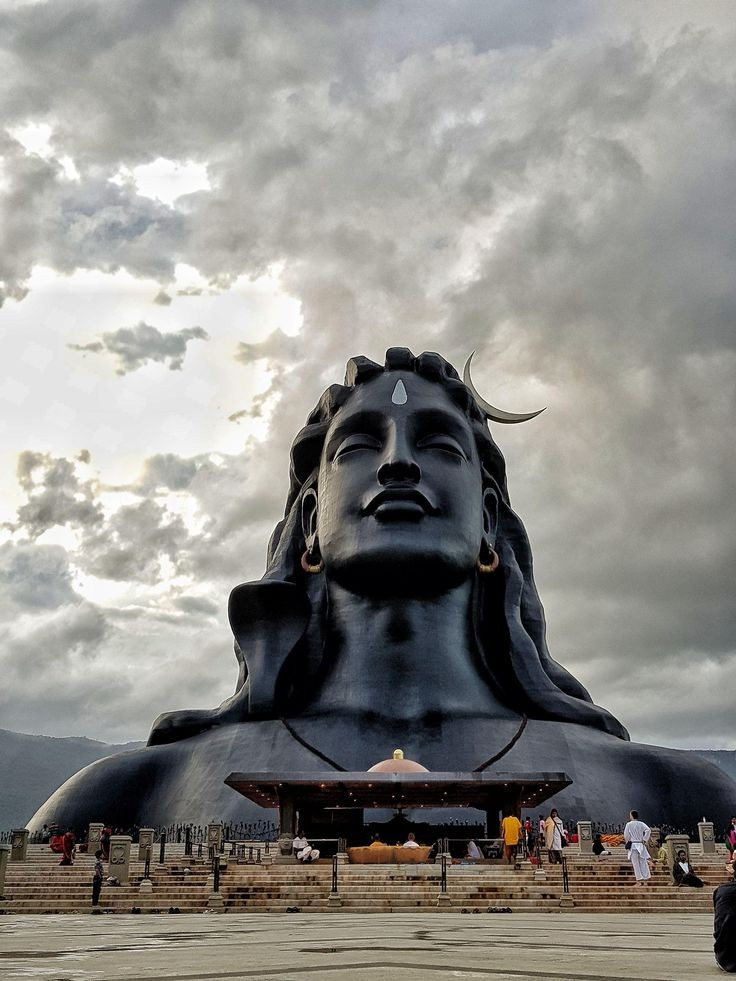
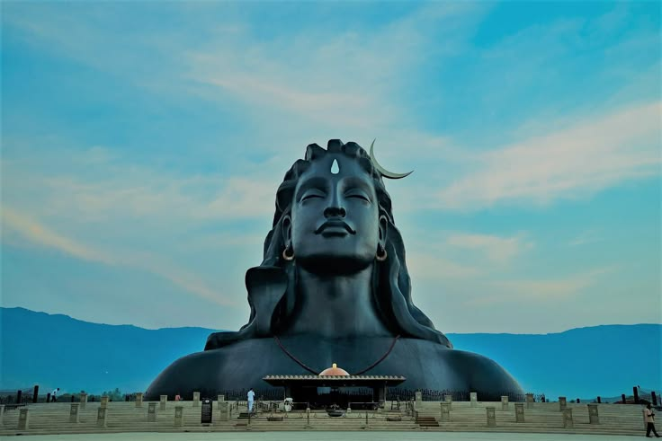

Discover Divine Peace at Adi Yogi Temple – A Spiritual Sanctuary in Bangalore"
Adi Yogi Temple in Bangalore, part of the Isha Foundation, is dedicated to the first Yogi, Lord Shiva. The temple is renowned for its stunning architecture and serene ambiance, offering a spiritual experience for visitors.The Adi Yogi statue, one of the largest bust sculptures in the world, stands as a symbol of yoga, meditation, and the deep connection between humanity and the divine.
Architectural Beauty
Design: The temple features contemporary and traditional architectural elements, with the massive Adi Yogi Statue as the central attraction. The statue is 112 feet tall and represents the 112 ways to experience life as taught by Lord Shiva.
Lighting and Night View:the statue is beautifully illuminated at night and makes for a stunning view, a popular sight for tourists and photographers.
emple Grounds: The temple complex includes a meditation hall, beautiful gardens, and a peaceful environment that invites visitors to reflect and meditate.
Key Attractions
Shiva Lingam: The main attraction is the grand Shiva Lingam, an important symbol in Shaivism, representing Lord Shiva’s presence.
Meditation Hall: The temple has a designated space for meditation, allowing visitors to sit in peace and connect with their inner selves.
Adi Yogi Statue: The focal point of the temple, this statue is a tribute to the first Yogi, Lord Shiva, and is a sight to behold, symbolizing the power and wisdom of yoga.
How To Reach
By Bus: Multiple BMTC routes pass by the temple.
By Car: Parking available near entrance.
Events and Festivals
Mahashivaratri: The temple celebrates Maha Shivaratri with special prayers, music, and spiritual programs, drawing thousands of devotees and visitors each year.
Yoga Programs: Isha Foundation conducts regular yoga courses and meditation sessions for those seeking to deepen their spiritual practice.
The temple offers a peaceful and serene environment for spiritual practices like yoga, meditation, and chanting.
Things to Do
Explore the temple Interiors.
Attend a Yoga Session: Participate in a yoga class or meditation session offered by the Isha Foundation.
Meditate: Spend time in the temple's meditation hall for inner peace.
Photography: Capture the grandeur of the Adi Yogi statue and the serene temple environment.
Visitor Information
Best Time to Visit: Early mornings or evenings are the best times for a peaceful experience. Special events like Maha Shivaratri offer a vibrant and spiritually charged atmosphere.
Timings: Typically open from 6:00 AM to 8:00 PM, but timings may vary during festivals.
Local Cuisine
Temple Prasadam: Enjoy the temple’s prasadam (sacred food offerings), typically served after rituals.
Nearby Eateries: Explore local South Indian cuisine at nearby restaurants like MTR and VV Puram Food Street.
Visitor Tips
Respect the Sanctity: Silence and reverence are important when visiting the temple.
Photography: Allowed outside but limited inside the temple.
Donations: Visitors can contribute to the Isha Foundation’s projects or participate in seva (service) activities.